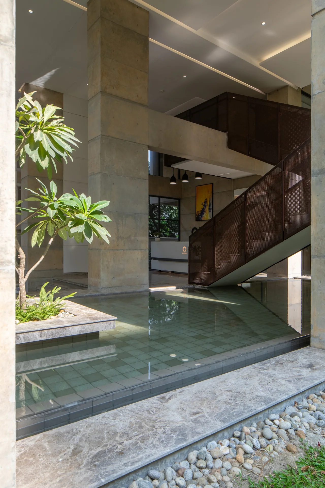

Understand the space.
Circulation, daylight and everyday use shape the first drawings and models.
Arif Raihan / Architectural designer
Architecture, interiors and the details that bring a space to life.

A little about me
I’m drawn to architecture that makes room for everyday life: somewhere to pause, meet someone, find shade or simply enjoy the light. I like spaces that offer these small moments without needing to explain themselves.
For me, a building begins with its surroundings: the climate, the landscape and the way people already use a place. I’m interested in the spaces between inside and outside, where a courtyard, a shaded edge or an open ground floor can bring people together. In my museum design, that interest becomes a journey through history, with light and movement shaping how the story unfolds.
I care just as much about what we touch and see up close. A handrail, a joint or the way two materials meet can change how a space feels. I try to keep those details connected to the larger idea, choosing materials for how they feel, weather and can be made.
Explore my workHow I work
Circulation, daylight and everyday use shape the first drawings and models.
Material choices, joinery, precise set-out and construction information make the idea practical.
Site surveys, consultant coordination and workmanship reviews connect the drawings to the built result.
Experience & education
Commercial, residential and workplace projects, with a continuing interest in public and cultural space.
Design & construction coordination / Dhaka
Progressed from Trainee Executive to Executive and Senior Executive, working on architectural design, technical information and finishes delivery.Architectural graduate / Interiors
Spatial design support, 3D development, bespoke furniture, construction details and site surveys.Interior designer / Part-time
Residential and commercial interiors, detailed drawings and site coordination; began during my architecture studies.MBA, Project Management / Dublin Business School
Bachelor of Architecture / BRAC University
Tools & development
AutoCAD · SketchUp · Revit
Revit model development, sheets, schedules and family management through my museum and Puthishala portfolio projects.V-Ray · Twinmotion · Lumion
Photoshop · InDesign · Illustrator
Project programmes · Progress reporting
Excel · Word · PowerPoint
See the thinking in the work